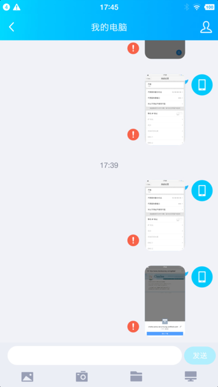
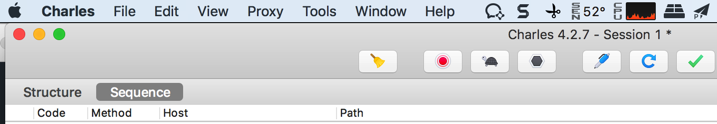

其他心得
此处介绍Charles相关的其他方面的心得。
Charles代理导致部分应用无法使用网络
比如锤子M1L中，设置了Wifi代理为Charles后：
QQ中的，用于PC端和手机端互传文件的文件助手，给PC端发送非文本消息，比如图片时，就会失败：

但是奇怪的是：
- 浏览器可以正常上网
- 微信也还可以正常发送普通包括表情等文本消息的
- 微信中的文件助手也可以正常发送图片等文件的
Charles的CPU占用率奇高导致Mac系统卡
Mac版的Charles v4.2.6，在使用抓包期间，遇到过CPU占用率很高的问题，尤其是抓https的包时：
- 经常：CPU占用率奇高
- 导致Mac系统巨卡，印象笔记中输入文字都卡
- 偶尔：CPU占用率还行，不会导致系统卡
看到提示Charles有新版：4.2.7
升级之前，去看了：
Version History • Charles Web Debugging Proxy
提到了Mac中
macOS: Find dialog no longer uses 100% CPU
但是此处我Mac中Charles的查询对话框，没有导致CPU 100%，而是正常抓包导致CPU占用率接近100%
刚已去升级Charles为4.2.7，等使用一段时间后，看看CPU占用率奇高的问题，是否有改善。
此处，使用了一会，貌似CPU占用率有很大改善，暂时不会导致Mac卡死了：

此处温度也只有60度不到
-》而之前系统卡死，稳定要到70多，80多度。
又试了试，好像的确彻底解决Mac卡顿的问题了？
过了几个月，后续使用发现：Charles有时候还会CPU占用率很高，但是频率还行，不算太高，基本能接受。